The Painter Nicolae Grigorescu
|
The classical Romanian painter Nicolae Grigorescu was born 1838 at Pitaru and died in the year 1907 at Campina. He is considered the founder of the modern Romanian painting school. He was the first Romanian painter to develop a consistent approach closely linked to a personal style. Grigorescu is renown as the fine painter of the peasants' life in Muntenia (Wallachia), a province of Romania. His canvases inspired by country life capture the national character under various guises and mark the beginning of what was to become a genuine tradition for the artists of the following generations. |
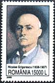 Issued 2000.Self-Portrait. |

Grigorescu started at an early age to learn the craft of painting (1848-1850) with the Czech painter Anton Chladek as professor, in Bucharest. At the age of only 15 he made icons for the church of Baicoi, and between 1854-1856 for the church of Caldarusani. Later followed mural paintings, frescos, for the Zamfira church (1857) and Agapia church (1858-1861).
 |
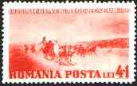 |
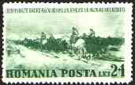 |
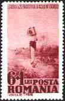 |
| 1938. Birth Centenary. The Spring. | 1938. Birth Centenary. Returning from Market. | 1938. Birth Centenary. Escorting Prisoners. | 1938. Rodica, the Water Carrier. |
In 1861, having met the politician and writer Mihail Kogalniceanu, he received a grant from the Ministry of Moldova, in order to study in Paris. During 1862-1863 he frequented the studio of Sebastien Cornu, where he also met his painter-colleague Auguste Renoir. At the Louvre Museum he made copies after the works of Gericault, Rubens, Rembrandt and others. During the summers he worked in Barbizon and other places near Paris, in the atmosphere of the work outside that prepares the future ascent of impressionists.
 1977. Oxcart. |
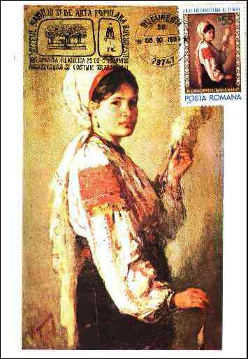 1975. Woman Spinning. Scott # 2540. MC-Folk Art Exhibition. |
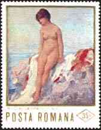 |
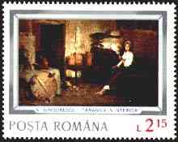 |
|

He exhibited his works at the Paris Saloon (since 1868), at the Exhibition of Living Artists from Bucharest (since 1870) and at the exhibitions of the Beaux Arts Society (since 1873). During 1873-1874 he made a study journey to Italy, Vienna, Greece and Constantinople As a war painter he took part in the Independence War during 1877-1878, making numerous sketches to be used in his future paintings.
From 1879 till 1890 he worked especially in France, either in Bretagne (Vitre) or in his studio in Paris. Back in Romania, he opened several personal exhibitions at Romanian Atheneum (1891, 1895, 1900, 1901, 1902, 1904). At the same time he built a house in Campina, the future Grigorescu Museum.
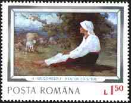 1977. Shepherdess |
 1982. Merry Peasant Girl. |
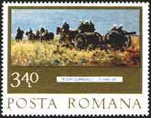 1977. Artillery. |
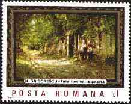 1987. Peasant Girl Spinning. |
 1977. Rest at Well |
In his portraits (of D. Grecescu, Carol Davila, Andreescu at Barbizon), self-portraits, compositions inspired by the participation from the Independence War (The Smyrdan Attack, A Rosior on Horseback, Scenes with Turk Prisoners), in the Oxcarts series, in the landscapes painted in Romania or abroad (At Posada, The Fisher Woman from Granville, The Old Woman of Brolle, The Autumn Landscape) he had shown an original style and vision. The exercise of working in plain air brought to his palette a perfect joining of rigor and spontaneity.
 1968. Little Girl with Red Kerchief |
 1966. Peasant Woman |
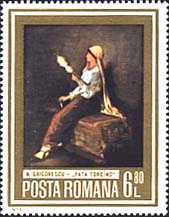 1973. Spinner |
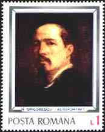 1977. Self-portrait. |
He was the first of the founders of the Rumanian classical painting school, followed quickly by Andreescu and Luchian, his name becoming a symbol for the younger generations of artists. His authority will extend into the 20th century, long after his disappearance.
| Created: 2001. Revised:
May 19, 2019.
Copyright © 2001 - 2019 by Victor Manta, Switzerland. All rights reserved in all countries. |